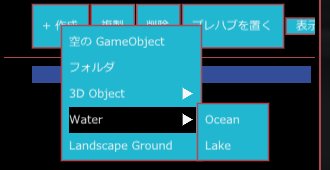
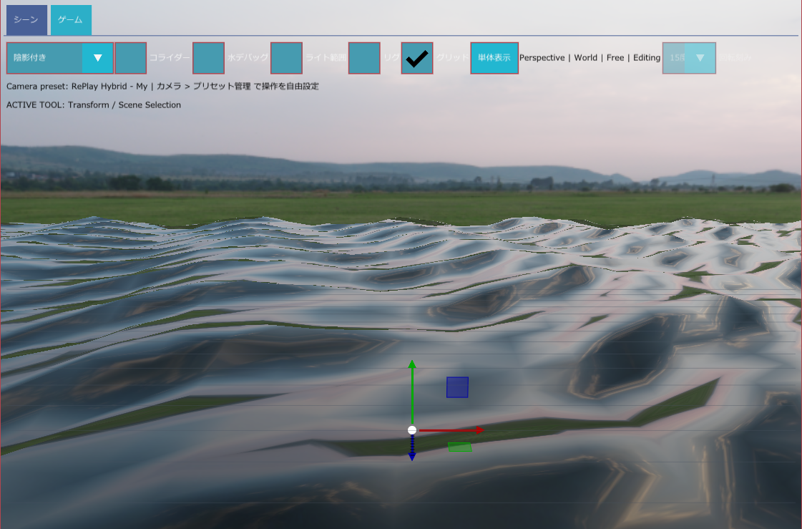
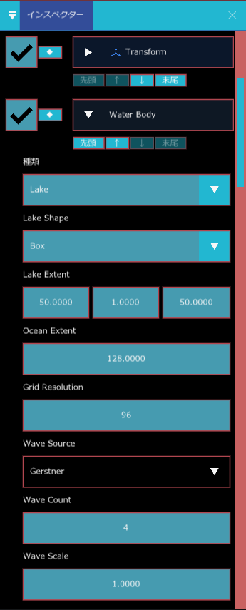
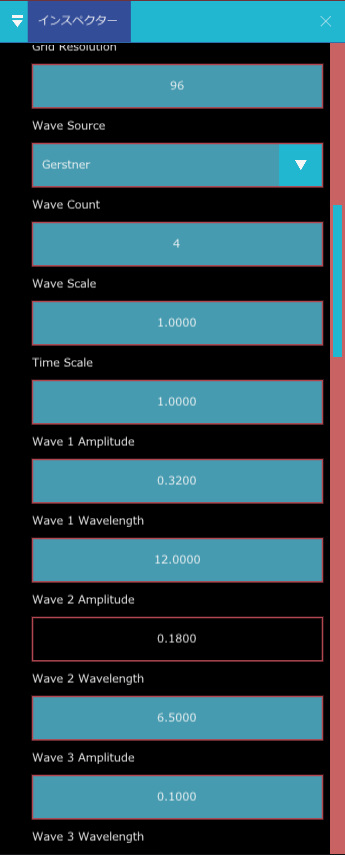
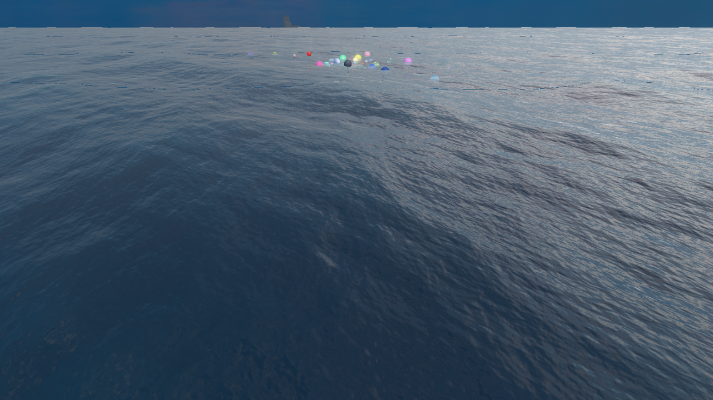
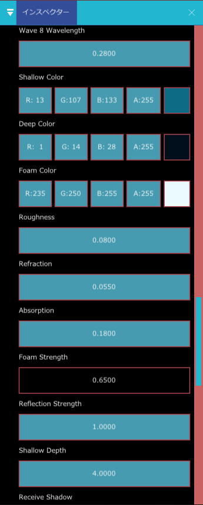
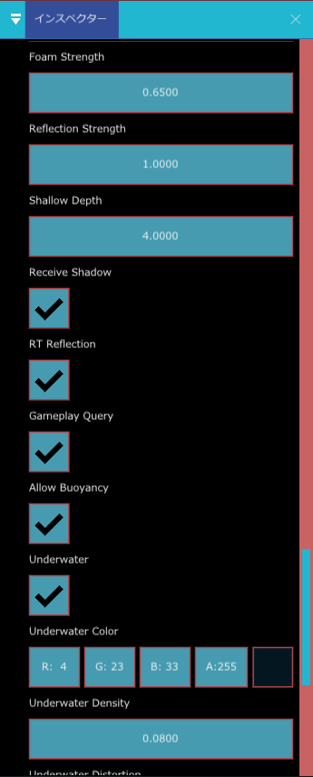
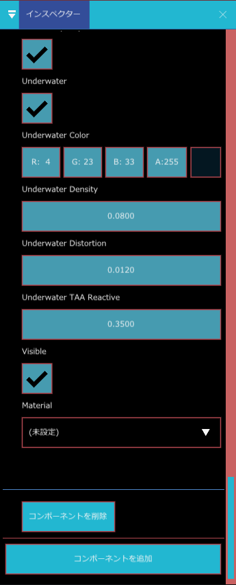
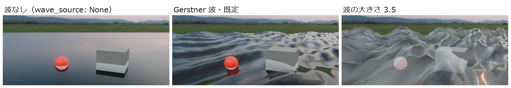

Water Body（水域）
海（Ocean）や湖（Lake）の水面を作る部品です。波の動き、光の反射、水を通した屈折、泡、水中に入ったときの画面の色までをこの 1 つで持ちます。水面の高さや流れを物理の側から調べる用途にも使われ、Buoyancy を付けた物体はこの水面に浮きます。
こんなときに使う
- 海岸や港の海、池や湖を置きたいとき
- 箱・ボート・流木などを水に浮かべたいとき（Buoyancy と組み合わせる）
- 水に入ったときに、画面を青緑に染めたい・ゆがませたいとき
- 波の大きさや向き、色、泡の量を自分で調整したいとき
水を作る
階層パネルの ＋ 作成 を押すと、Water の項目があります。その右に Ocean と Lake が出て、選ぶと Water Body が付いた GameObject が 1 つ作られます。

Lake を選んで作ると、種類は Lake、Lake Shape は Box、Lake Extent は 50, 1, 50 の設定で作られます（Ocean Extent の欄には 128 が入ります）。

海と湖の違い
| 種類 | 範囲の決まり方 | 向いている場所 |
|---|---|---|
| Ocean | Ocean Extent（既定 750）の広さの水面が広がります | 水平線まで続く海 |
| Lake | Lake Shape（Box / Sphere）と Lake Extent で決めた範囲だけに水が入ります | 池・湖・プール・水路 |
プロパティ
項目が多いので、働きごとに分けて書きます。数値の右の範囲は、インスペクターで入力できる範囲です。
種類と範囲

| 表示名 | 内部名 | 種類 | 既定値 | 範囲 | 説明 |
|---|---|---|---|---|---|
| 種類 | kind | 選択 | Ocean | Ocean か Lake を選びます | |
| Lake Shape | shape | 選択 | Box | Lake のときの水の形です。Box（箱形）、Sphere（球形）、Mesh（下の Water Mesh のモデルの形） | |
| Water Mesh | mesh_asset | アセット（モデル） | （空） | Lake Shape が Mesh のとき、水として描くモデル。水面の高さの問い合わせ（浮力など）も、このモデルの三角形の形を使います | |
| Lake Extent | extent | 3 つの数 | 100, 1, 100 | Lake の大きさです。X・Y・Z（横・深さ・奥行き）の順に入れます | |
| Ocean 範囲 X 半径 / 円形時の半径 | ocean_extent | 小数 | 750 | 16〜100000 | Ocean の水面の広がりです（2026-10-22 から表示名が変わりました。旧名 Ocean Extent） |
| Ocean 範囲 Z 半径（0 は X と同じ） | ocean_extent_z | 小数 | 0 | 0〜100000 | 長方形の海の奥行き。0 なら X と同じ（2026-10-22 追加） |
| Ocean 範囲形状 | ocean_shape | 選択 | 長方形 | 長方形／円（2026-10-22 追加） | |
| 海の縁のブレンド幅（範囲に対する割合） | ocean_seam_blend | 小数 | 0.1 | 0〜0.5 | 範囲の縁で、波・法線・泡を遠景の海へ滑らかにつなぐ幅。最小 3m（2026-10-22 追加） |
| 遠景の海を描く・遠景の海の範囲 | ocean_far_distance・ocean_far_extent | オン・オフ／小数 | オン・50000 | 1000〜1000000 | 範囲の外に、水平線まで続く軽い海を描く（2026-10-22 追加） |
| Grid Resolution | grid_resolution | 整数 | 96 | 8〜256 | 水面の細かさ（網目の数）です。大きいと波が滑らかになり、重くなります |
2026-10-22 から、インスペクターは今の設定で使わない項目を隠します（例：Ocean なら Lake の項目、Wave Source が FFT 以外なら FFT の項目、水中の表現がオフなら水中の項目）。項目が見当たらないときは、種類と Wave Source を先に確かめてください。川は River を使います。
波

| 表示名 | 内部名 | 種類 | 既定値 | 範囲 | 説明 |
|---|---|---|---|---|---|
| Wave Source | wave_source | 選択 | Gerstner | 波の作り方です。None は波なし（平らな水面）、Gerstner は計算で波を作ります。Texture (reserved) は将来用に予約されていて、今は使えません。Fluid Simulation は Lake Extent の範囲を Grid Resolution（最大 128）の網目で解く浅い水の流体で、物が着水すると波が立ち、その高さと流れが浮力・水中判定に使われます。FFT海洋（2026-10-13 追加）は、風速と吹送距離から本物の海の波の統計を作り、大小の波を重ねます（下のFFT 海洋） | |
| 流体の平均深さ・流体の重力・流体の減衰 | simulation_depth、simulation_gravity、simulation_damping | 小数 | 1、9.81、0.8 | 0.01〜100、0.01〜100、0〜20 | Fluid Simulation のときの波の伝わり方。深いほど・重力が大きいほど波が速く進み、減衰が大きいほど早く静まります |
| GPU 浅水波 | gpu_shallow_solver | オン／オフ | オフ | Fluid Simulation の浅水波を GPU（DX12 のコンピュート）で計算します。オフなら今までの CPU の計算です。広い湖を軽く動かしたいとき、PBF 流体の局所 PBF と組み合わせます | |
| 流体密度 (kg/m³) | fluid_density | 小数 | 1000 | 0.01〜1000000 | 浮力の計算に使う水の密度。PBF 流体の「基準密度」と同じ値にすると、粒の計算と浮力がそろいます |
| Wave Count | wave_count | 整数 | 4 | 0〜8 | 重ねる波の数です。下の Wave 1〜8 のうち、この数だけが使われます |
| Wave Scale | wave_scale | 小数 | 1 | 0〜8 | 波全体の高さの倍率です。0 で平らになり、上げるほど荒れた海になります（波長は変わりません）。 |
| Time Scale | time_scale | 小数 | 1 | −4〜4 | 波の進む速さです。マイナスにすると逆向きに進みます |
| Wave 1〜8 Amplitude | wave0_amplitude 〜 wave7_amplitude | 小数 | 0.32 / 0.18 / 0.10 / 0.06 / 0.035 / 0.025 / 0.018 / 0.012 | 0〜20 | 各波の高さ（振れ幅）です。番号が大きいほど細かく小さな波が既定です |
| Wave 1〜8 Wavelength | wave0_wavelength 〜 wave7_wavelength | 小数 | 12 / 6.5 / 3.2 / 1.7 / 0.95 / 0.62 / 0.41 / 0.28 | 0.1〜500 | 各波の波長（山から山までの長さ）です。大きいとゆったりした波になります |
FFT 海洋（2026-10-13 追加）
Wave Source を FFT海洋 にすると、風の強さと風が吹き続けた距離（吹送距離）から、実際の海と同じ波の大きさの分布を作ります。手で波を 1 本ずつ決める Gerstner と違い、うねりから細かいさざ波までが自然に重なります。

resources/Game/Inflate/Inflate_FftOcean を実行して 240 フレーム後。既定に近い穏やかな外洋です。| 表示名 | 内部名 | 既定値 | 範囲 | 説明 |
|---|---|---|---|---|
| FFT海洋 風速 (m/s) | ocean_wind_speed | 7 | 0.5〜40 | 強いほど波が高く長くなります。7 で穏やかな外洋、15 以上で荒れた海です |
| FFT海洋 風向 (度) | ocean_wind_direction | 20 | −360〜360 | 波の進む向き |
| FFT海洋 吹送距離 (km) | ocean_fetch_km | 120 | 0.1〜2000 | 風が水面を吹き続けた距離です。短いと湖や湾のような細かい波、長いと外洋のうねりになります |
| FFT海洋 方向のそろい | ocean_directional_spread | 8 | 0.5〜64 | 大きいほど波が風向きにそろい、小さいほど四方へ散ります |
| FFT海洋 波頭の尖り | ocean_choppiness | 0.9 | 0〜2.5 | 波の山をとがらせる強さ。上げすぎると波頭が折り返して見えることがあります |
| FFT海洋 最大区画 (m) | ocean_patch_size | 256 | 16〜4096 | 一番大きい波の区画の一辺です。小さい段は、同じ模様の繰り返しが目立たないよう自動で割り切れない比に分けます |
| FFT海洋 白波の量・白波の消える速さ | ocean_foam_coverage、ocean_foam_decay | 0.45・0.9 | 0〜1・0〜10 | 波頭に出る白い泡の量と、消えるまでの速さ |
| FFT海洋 乱数の種 | ocean_seed | 1 | 0〜100000 | 波の模様の乱数。変えると別の海になります |
物が着水したときのしぶきは、PBF 流体の「イベント式の波紋としぶき」と組み合わせて出します。
見た目

| 表示名 | 内部名 | 種類 | 既定値 | 範囲 | 説明 |
|---|---|---|---|---|---|
| Shallow Color | shallow_color | 色 | R 13, G 107, B 133 | 浅いところ（水底や岸が近い所）の水の色。明るい色にすると、浅瀬が透き通って見えます。 | |
| Deep Color | deep_color | 色 | R 1, G 14, B 28 | 深いところの水の色。暗い色にすると、深い所ほど暗く沈んだ水になります。 | |
| Foam Color | foam_color | 色 | R 235, G 250, B 255 | 波頭や岸辺にできる泡の色 | |
| Roughness | roughness | 小数 | 0.08 | 0〜1 | 水面のざらつきです。小さいほど鏡のように映り、大きいとぼやけます |
| Refraction | refraction_strength | 小数 | 0.055 | 0〜0.5 | 水の中の物が曲がって見える強さです |
| Absorption | absorption | 小数 | 0.18 | 0〜5 | 深くなるほど光が吸われて暗くなる強さです |
| Foam Strength | foam_strength | 小数 | 0.65 | 0〜4 | 泡の量です。0 で泡が出ません |
| Reflection Strength | reflection_strength | 小数 | 1 | 0〜4 | 周りの景色が水面に映る強さです |
| Shallow Depth | shallow_depth | 小数 | 4 | 0.01〜100 | この深さまでを「浅い」として、Shallow Color から Deep Color へ変えていきます |
| Receive Shadow | receive_shadow | オン・オフ | オン | 水面に影を落とすかどうか | |
| RT Reflection | rt_reflection | オン・オフ | オン | レイトレーシングを使った正確な反射を使うかどうか。オフだと画面の映り込みなど別の方式に頼ります | |
| Visible | visible | オン・オフ | オン | オフにすると水面を描きません | |
| Material | material_asset | アセット（Material） | （空） | 水面のマテリアルです。空なら標準の水を使います。自作するときは、標準の Water か、#pragma replay_water を持つ Shader Composer / HLSL のマテリアルを指定します |
ゲームとの連携

| 表示名 | 内部名 | 種類 | 既定値 | 説明 |
|---|---|---|---|---|
| Gameplay Query | query_enabled | オン・オフ | オン | 物理などが「この位置の水面の高さ・流れ」を調べられるようにします |
| Allow Buoyancy | allow_buoyancy | オン・オフ | オン | Buoyancy を付けた物体をこの水で浮かせるかどうか。Gameplay Query もオンである必要があります |
| 着水のしぶきと泡の粒 | splash_particles | オン・オフ | オン | 物や ワイヤー・ホース が水面に入った瞬間に、しぶきと水面に広がる泡の粒を Particle Emitter で出します |
水中の表現

カメラが水面より下に入ったときの画面の表現です。
| 表示名 | 内部名 | 種類 | 既定値 | 範囲 | 説明 |
|---|---|---|---|---|---|
| Underwater | underwater_enabled | オン・オフ | オン | 水中の表現を使うかどうか | |
| Underwater Color | underwater_color | 色 | R 4, G 23, B 33 | カメラが水中に入ったときの霧の色。濃い色ほど水中が見通しにくく感じます。 | |
| Underwater Density | underwater_density | 小数 | 0.08 | 0〜5 | 水中の霧の濃さ。大きいと遠くが見えなくなります |
| Underwater Distortion | underwater_distortion | 小数 | 0.012 | 0〜1 | 水中の画面のゆらぎの強さ |
| Underwater TAA Reactive | underwater_reactive | 小数 | 0.35 | 0〜1 | 水中で残像（TAA）を抑える強さ。ぶれや残像が気になるときに上げます |
波の成分（Wave 1〜8）と白波
（2026-10-24 時点で表に無かった項目。コードから書いた内容） 海の波は 8 つの波の重ね合わせです。Wave 1 がいちばん長くて高い波、番号が大きいほど短く小さい波です。「Amplitude」は高さ（m）、「Wavelength」は波の長さ（m）です。
| 表示名 | 内部名 | 既定値 | 範囲 | 説明 |
|---|---|---|---|---|
| FFT海洋 白波の消える速さ | ocean_foam_decay | 0.9 | 0〜10 | |
| Wave 1 Amplitude | wave0_amplitude | 0.32 | 0〜20 | |
| Wave 1 Wavelength | wave0_wavelength | 12 | 0.1〜500 | |
| Wave 2 Amplitude | wave1_amplitude | 0.18 | 0〜20 | |
| Wave 2 Wavelength | wave1_wavelength | 6.5 | 0.1〜500 | |
| Wave 3 Amplitude | wave2_amplitude | 0.1 | 0〜20 | |
| Wave 3 Wavelength | wave2_wavelength | 3.2 | 0.1〜500 | |
| Wave 4 Amplitude | wave3_amplitude | 0.06 | 0〜20 | |
| Wave 4 Wavelength | wave3_wavelength | 1.7 | 0.1〜500 | |
| Wave 5 Amplitude | wave4_amplitude | 0.035 | 0〜20 | |
| Wave 5 Wavelength | wave4_wavelength | 0.95 | 0.1〜500 | |
| Wave 6 Amplitude | wave5_amplitude | 0.025 | 0〜20 | |
| Wave 6 Wavelength | wave5_wavelength | 0.62 | 0.1〜500 | |
| Wave 7 Amplitude | wave6_amplitude | 0.018 | 0〜20 | |
| Wave 7 Wavelength | wave6_wavelength | 0.41 | 0.1〜500 | |
| Wave 8 Amplitude | wave7_amplitude | 0.012 | 0〜20 | |
| Wave 8 Wavelength | wave7_wavelength | 0.28 | 0.1〜500 |
波の見た目
空とオブジェクトが映り込む水面を、手前から見た例です（赤い球と灰色の箱が水に浸かっています）。

泡と入水のしぶき（2026-10-01 追加）
- 波が物に当たる所に、泡の模様が自動で出ます。設定はありません。
- Buoyancy を付けた Rigidbody が水に入ると、その位置に入水のしぶき（泡の輪）が出ます。速く落ちるほど強くなります。同時に表示できるのは 4 か所までで、古いものから入れ替わります。
- 水面には Model Effect Stack も掛けられます（切り抜きで合成します）。
- 空の雲の影と、雲・月の映り込みが水面に出ます。細かいさざ波、深さによる色の変化、遠くの泡の見え方も改善されました。
使い方の例
湖を置く
- 階層パネルの ＋ 作成 > Water > Lake を選びます。「Lake」という GameObject ができます。
- （自分で組み立てるなら、＋ 作成 > 空の GameObject を作り、インスペクターの コンポーネントを追加 > Rendering > Water Body を選び、種類 を Lake にします。）
- Lake Extent を、たとえば 20, 2, 20 にします（横 20・深さ 2・奥行き 20）。
- Transform の位置を動かして、水面の高さを地面のくぼみに合わせます。
- 波を弱くしたいときは Wave Scale を 0.3 くらいに下げます。
物を浮かべる
- 階層パネルで ＋ 作成 > 3D Object > Cube を作り、水面の少し上に置きます。
- Cube に Rigidbody を追加します（種別は Dynamic のまま）。
- 続けて Buoyancy を追加します。
- Water Body の Gameplay Query と Allow Buoyancy がオンなことを確かめます。
- ゲームを実行（F5）します。Cube が水に落ちて浮きます。Buoyancy の In Water が「オン」になったら水に入っています。
海全体を作って泡を増やす
- Water Body を追加し、種類 を Ocean にします。
- Ocean Extent で見渡せる広さを決めます。広いほどGrid Resolution が足りなくなって波が粗く見えるので、その場合は Grid Resolution を上げます。
- Foam Strength を 1.2 くらいに上げると、波頭の泡が増えます。